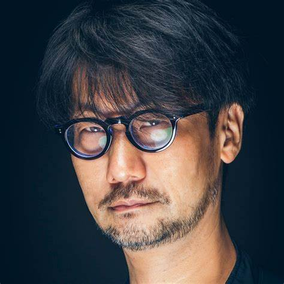

Dear ABC company,
I hope this email finds you well.
I have looked at your holiday website for cruises. I am writing to request more information about your cruise.
First of all, could you provide me with more information about how long the cruise lasts. I would be grateful if the cruise lasts a week. Knowing the length of the cruise will help me plan accordingly.
My second question is about where and when the cruise starts and ends. The website says the cruise will start in early September, but I would also like the exact dates of the cruise. Could you inform me as soon as they come available ? Understanding these details will assist me in making travel arrangements.
My third question is about the cost of a cabin. I would like to know if you have a variety of cabins with different prices. Could you confirm if there are any special packages or discounts available? I would also know more about payment method.
Thank you in advance for your assistance. If you require any further information from me, please do not hesitate to request.
I look forward to hearing from you soon.
Best regards,
Le Trieu Huy
Contact phone: 0123456789
One of my favorite website is https://www.pixilart.com.
This website provides users with the tools to create amazing drawings. This is a great place for designers and artists to create drawings full of personality and creativity. The best thing about this website is that it can help users draw single frames and stitch them together to create animations. Another good point is that users are provided with tools to draw from simple shapes such as straight lines to complex shapes such as circles, as well as a diverse color palette to coordinate details together. At the same time, you can also share drawings if you want.
However, this website is quite difficult to use for newbies It also requires good drawing ability of users. This website also has much advertising.Sometimes when you're drawing, ads will appear and obscure the part you want to see, which is very annoying.
In summary, this website is a good place for your drawing hobby. I recommend you to use it.
Hideo Kojima is a Japanese video game designer. He is famous for his talent in designing video games with a bold cinematic style. In 2008, Next-Gen placed him seventh in their list of "Hot 100 Developers 2008". On January 20, 2022, Kojima received an Industry Legend Award from the Arab Game Awards. Kojima is known for his popular video games such as Metal Gear, Death Stranding, Castlevania and so on.
Kojima was born in 1963 in Tokyo, Japan. Since he was a child, his family often had to move because his parents often changed jobs. So he didn't have many friends. He often watched movies with his father, which created his passion for cinema later on. In the early 1980s, After graduating from university, Kojima applied for a job at a vidoe game company called Konami.
The first time his fame spread was the success of a game called Metal Gear. With sci-fi shooter gameplay not so popular at that time, the game quickly attracted positive reviews from the community. After that, he decided to produce the next versions of Metal Gear and always received success.In 2015, Kojima quit his job at Konami and opened an independent studio called Kojima Production. Here he continued to develop new video games, such as Death Stranding, which is still attractive today.
Currently, Kojima is over 60 years old, but he still continues to dedicate himself to video games. The times he appeared in the media, everyone was looking forward to what he was about to bring. He will definitely always be a topic for people to mention whenever talking about video game development.
